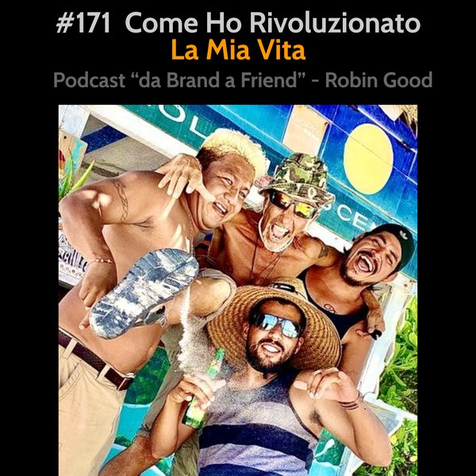

Come Ho Rivoluzionato la Mia Vita

*Come Ho Rivoluzionato la Mia Vita*
Ho ascoltato con attenzione i feedback che ho ricevuto dopo l'ultima puntata (grazie a tutti coloro che mi hanno lasciato le loro impressioni e suggerimenti) e ho deciso di ascoltare i numerosi inviti a "sbandare" e a condividere, almeno in parte, come ho profondamente trasformato la mia vita dal 2015 ad oggi e soprattutto negli ultimi 8 mesi.
Prima tappa: Gennaio 2020.
Invito mio figlio Ludovico (25) a fare un viaggio insieme a me in Thailandia. I miei racconti delle isole Thailandesi li sente sin da quando era piccolo ed è arrivato finalmente il momento ideale per concretizzare un sogno che desideravo realizzare da anni.
Partiamo con destinazione Koh Samui, Koh Phangan e Koh Tao, le tre bellissime isole nel golfo della Thailandia che ho visitato già numerose volte, in seguito a progetti legati alla comunicazione e alle nuove tecnologie che mi hanno portato frequentemente in passato nel sud-est asiatico.
Tutto và per il meglio e nonostante gli anni passati dalla mia ultima visita, troviamo ancora un'infinità di posti meravigliosi ancora incontaminati dal turismo occidentale. Esplorare queste isole con i motorini che si possono affittare per pochi dollari al giorno è una cosa fantastica. Il traffico è inesistente e le strade che tagliano giungle infinite di palme o costeggiano le infinite spiagge di queste isole, sono di per se una delle più esperienze più belle da fare in questi posti.
Più passano i giorni e più mi rendo conto che tutto ciò che vedo, sento e vivo stando su queste
isole è esattamente ciò che desidero avere nella mia vita. Sempre.
Nonostante le sensazioni di libertà, benessere, e di grande socialità con altri esploratori non mi siano nuove, è la prima volta che comincio a domandarmi in maniera seria come mai non ho ancora fatto di posti come questi, la mia base fissa.
Giungo al punto di registrare alcuni video privati per ricordare a me stesso, una volta che fossi tornato in Europa, le esatte sensazioni che stavo provando e quanto forte fosse il mio desiderio di fare di questi posti e di questa libertà la base per la mia vita futura.
Ma appena rientrati dal viaggio, mio figlio in Italia, e io nella mia isoletta sperduta nel mezzo dell'Oceano Atlantico (Terceira, Azzorre, Portogallo) scoppia la pandemia.
Dopo poche settimane la Thailandia chiude l'accesso agli stranieri e istituisce una serie di restrizioni e requisiti per poter entrare nel paese che la rendono ad oggi virtualmente inaccessibile a chi come me non è disposto ad accettare compromessi e a dire sì a regole e imposizioni che non hanno nulla di logico o di scientifico.
Da quel momento, e nell'arco di poche settimane mi auto-convinco che il sogno che per la prima volta nella mia vita avevo deciso di trasformare in realtà non si sarebbe mai più potuto realizzare. Dalle informazioni alternative che raccolgo durante l'inizio della pandemia mi rendo conto che la stessa non è avvenimento casuale e che le restrizioni imposte si sarebbero protratte probabilmente per anni a venire.
Non smetto però di essere in contatto con Q, un ragazzo francese conosciuto sull'isola di Koh Tao, e simbolo vivente del tipo di vita che avevo da poco realizzato avrei desiderato intraprendere anche io.
Q è un'anima libera e indipendente come me, e dopo essere anche lui rientrato in Francia per qualche mese ad inizio pandemia, all'improvviso mi scrive: "Oh! Ma che fai ancora lì in Europa? Io sono in Messico! Qui è tutto aperto e ci sono posti, persone e cose fantastiche da vedere. Fa caldo e il dormire e il mangiare costano pochissimo!"
Continua...
-------------
Info Utili
• Ottieni feedback, ricevi consigli sul tuo progetto online
Entra nella comunità di imprenditori indipendenti di Robin Good
https://robingood.it
• Musica di questa puntata:
"Orientation" by Birocratic - disponibile su Bandcamp:
https://birocratic.bandcamp.com/track/orientation
• Dammi feedback:
critiche, commenti, suggerimenti, idee e domande unendoti al gruppo Telegram https://t.me/@RobinGoodPodcastFeedback
• Ascolta e condividi questo podcast:
https://gopod.me/RobinGood
• Seguimi su Telegram:
https://t.me/RobinGoodItalia
(tutti i miei contenuti, immagini, audio e video in un solo canale)
oppure
Su Facebook:
https://facebook.com/RobinGoodItalia/
Su Instagram:
https://instagram.com/RobinGoodItalia
Su LinkedIN:
https://linkedin.com/in/RobinGood
• Newsletter:
http://robingood.it/toptools-newsletter
• Per info e richieste:
mailto: Ludovica.Scarfiotti@robingood.it